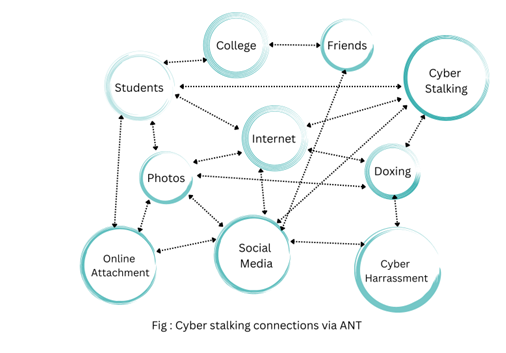

ACTOR-NETWORK THEORY

Introduction
To the best of my knowledge and understanding, the actor-network theory is anything and everything that is connected to one another in some manner. It is possible that there is a connection between people, technologies, biological elements, and sociological factors. According to "Bruno Latour," every network consists of agents, and every agent consists of its own network within itself with its own sub-agents, each of which can be further broken down into its own network, and so on. However, to believe certain confections raises doubt of how an object could connect as a human - being. However, after going through the readings, it became clear that everything is composed of a collection of atoms regardless of whether a human or not.
According to the findings of a doctoral research project entitled "The use of Actor-Network Theory and a Practice-Based Approach to understand online community participation," which was carried out by "The University of Sheffield," As part of a project dealing with human resources at a university in Mexico, the focus of this study is on an attempt that was made but ultimately failed to establish an online community that would be supported by a collaborative technology. As a result of these readings, I have learned that the lack of participation is due to the inability of the technology to establish strong relationships with key actors, as well as the processes of betrayal that occur when human actors give in to the demands of the technology. As per interpretation, there should not be any differentiation made between human actors and non-human actors. Both need to be analyzed using the same criteria without any distinctions being made between the connections. I believe that non-human actors and human actors will have an equal opportunity to act because they will both have the capability to act.
Cyber Stalking & Harassment
Cyberstalking is an expansion of conventional stalking in which the criminal adopts a high-tech method of operation. Considering the increasing incidence of cyberstalking as a serious crime today. I would like to choose how social media impacts people’s minds and their way of thinking. I am curious to see how technology might affect a young person's moral behavior since it does not make it clear how actions affect others.
People now use the Internet for local or international communication in business, education, and social situations with the help of the Internet, it is now easy for people to compete, find a friend or friend of friends, or talk to some unknown people on the other side of the world.
Cyberstalking may not often involve direct contact between the individuals involved, and some victims may not even be aware that they are being followed online until it is too late. The victims may be watched via a variety of different methods, and the information that is acquired can subsequently be utilized for illegal activities like identity theft. Some stalkers even go as far as to harass their victims offline as well, sometimes even contacting friends or family members of the victims.

Here, I would like to provide a case study based on actor-network theory, which explores how young people's usage of social media may lead to cyberstalking, cyber-harassment, and even suicide. I have displayed the connections in the above diagram.
Conclusion
To Conclude, in Actor-Network Theory (ANT), the study of sociology has always held the view that humans and their interactions are distinct from nonhumans and their connections. Humans have their own civilizations as well as their own communities, while technology has its own networks. On the other hand, Bruno Latour's actor-network theory proposes that everything is of equal worth and is a member of the same continuous network. Everything is connected to each other in some manner.
Conclusion
To Conclude, in Actor-Network Theory (ANT), the study of sociology has always held the view that humans and their interactions are distinct from nonhumans and their connections. Humans have their own civilizations as well as their own communities, while technology has its own networks. On the other hand, Bruno Latour's actor-network theory proposes that everything is of equal worth and is a member of the same continuous network. Everything is connected to each other in some manner.
My Learnings :
- The actor-network theory includes everything and everything that is connected in some way. .
- During my research for this report, I've learnt how to find case studies that are important to the issue at hand. .
- Gained expertise of identifying and specifying each topic individually, as well as research techniques.